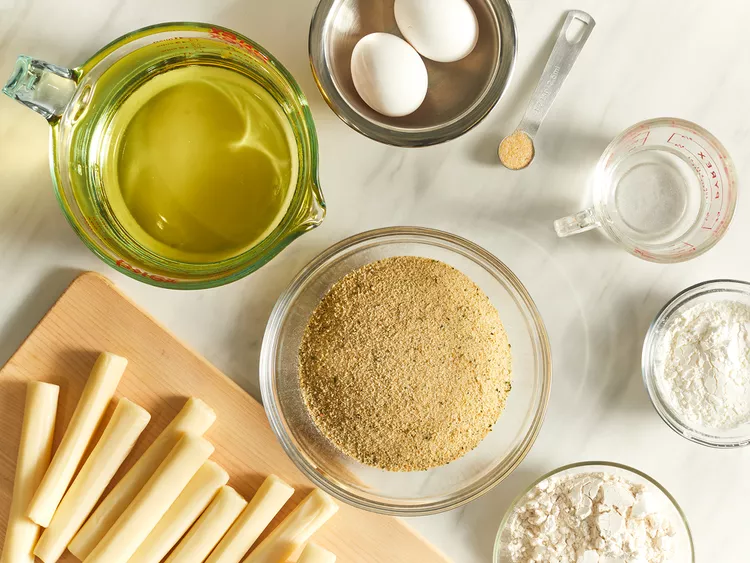
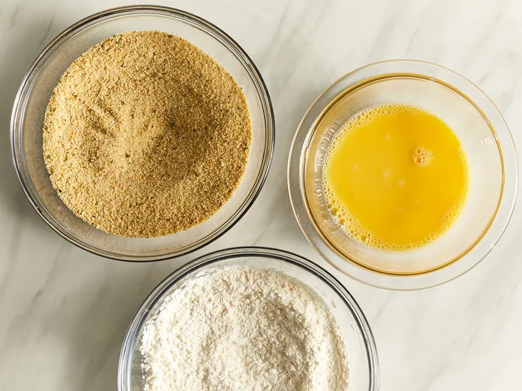
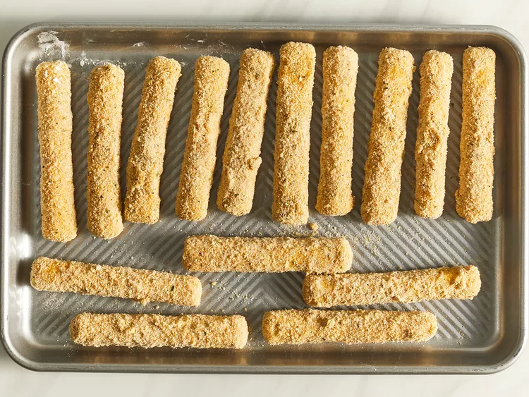
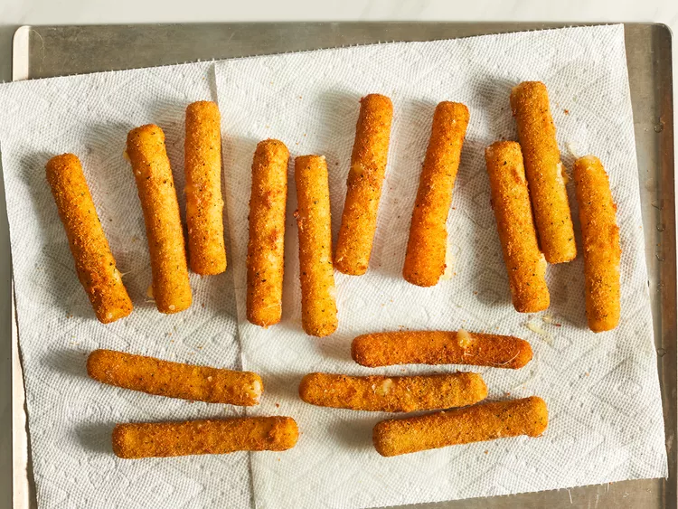

Mozzarella sticks are very easy to make at home. They're deep-fried until golden and crispy on the outside, with melted gooey cheese on the inside. They're so good and take just minutes to fry! Try dipping them in a marinara sauce!
Gather all ingredients.
Whisk water and eggs together in a small bowl. Mix bread crumbs and garlic salt together in a medium bowl. Blend flour and cornstarch together in a third bowl.
Heat oil to 365 degrees F (185 degrees C) in a large, heavy saucepan.
Dredge a mozzarella stick in flour; shake off excess. Dip into egg mixture. Lift up so excess egg drips back in the bowl. Press into bread crumbs to coat. Place breaded mozzarella stick on a plate or wire rack. Repeat with remaining mozzarella sticks.
Use a spider spoon or a pair of tongs to lower 3 to 4 mozzarella sticks into the hot oil. Fry until golden brown, about 30 seconds. Remove from heat and drain on paper towels. Repeat to fry remaining mozzarella sticks.
Servings Per Recipe: 8
Calories: 789
% Daily Value*
Total Fat: 67g 85%
Saturated Fat: 13g 67%
Cholestrol 83mg 28%
Sodium: 806mg 35%
Total Carbohydrate: 30g 11%
Dietary Fiber: 1g 4%
Total Sugars: 19g
Protein: 19g
Vitamin C: 0 0%
Calcium: 483mg 37%
Iron: 2mg 11%
Potassium: 76mg 2%